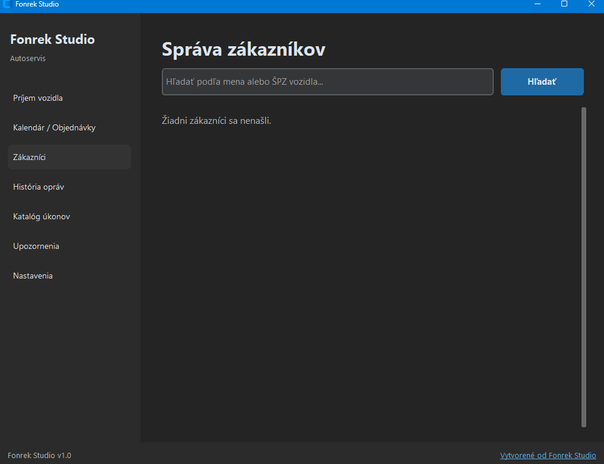

Ušetrite čas na administratíve
Už žiadne zápisníky ani neprehľadné tabuľky. Všetko nájdete na 2 kliknutia podľa EČV.
Desktopová aplikácia pre autoservis
Zjednodušte si evidenciu zákazníkov, vozidiel, opravárenských zákaziek a servisných intervalov v prehľadnom a rýchlom softvéri.

01 — Pre servis aj mechanika
Papier, zošit a rozhádzané tabuľky nahradí jedno okno. História auta, zákazka aj termín sú na dosah podľa evidenčného čísla.
Už žiadne zápisníky ani neprehľadné tabuľky. Všetko nájdete na 2 kliknutia podľa EČV.
Kompletná história opráv a servisný denník pre každé vozidlo na jednom mieste.
Automatické upozornenia na kontrolu STK/EK, výmenu oleja, rozvodov a filtrov.
Generovanie a tlač profesionálnych servisných protokolov a zákazkových listov v PDF na 1 klik.
02 — Prostredie aplikácie
Reálne obrazovky z Fonrek Studio. Príjem, kalendár aj zákazníci sú v jednom okne na vašom počítači.


03 — Čo je v balíku
Evidencia, ktorú autoservis naozaj používa. Od prvej návštevy zákazníka po vytlačený protokol.
Vozidlo zaevidujete rýchlo: ŠPZ, stav kilometrov aj popis závady. Z príjmu hneď vznikne servisný protokol, ktorý dopĺňate o prácu a materiál.
Protokol pre zákazníka vytlačíte alebo uložíte do PDF na jedno kliknutie. Bez prepisovania do tabuľky a bez ručného skladania dokumentu.
Termíny plánujete v prehľadnom kalendári. Vidíte, ktoré auto príde, kedy je dielňa obsadená a čo ešte čaká na vybavenie.
Ku každému autu máte zákazníka, kontakt a kompletnú históriu opráv. Pri ďalšej návšteve viete, čo sa na vozidle už robilo.
Vlastný zoznam servisných prác s cenami. Úkon pridáte do zákazky z katalógu, bez opakovaného vypisovania položiek.
Aplikácia upozorní na nadchádzajúcu servisnú prehliadku aj termín STK, aby ste zákazníka oslovili včas.
04 — Jedna voľba pre dielňu
Jednorazový nákup bez mesačných poplatkov. Dáta o zákazníkoch zostávajú vo vašom počítači.
Jedna platba
Softvér vám zostane. Žiadne odbery a žiadne opakované faktúry.
Vaše dáta
Program beží priamo na počítači v dielni. Údaje o zákazníkoch sa nikam neodosielajú a práca nečaká na server.
05 — Tri kroky
Žiadny server, žiadna registrácia účtu. Inštalácia na Windows a môžete evidovať.
Stiahnite si inštalačný balíček alebo .exe súbor aplikácie Fonrek Studio.
Spustite súbor na Vašom počítači (Windows) – inštalácia je rýchla a nevyžaduje žiadne zložité nastavovanie databáz.
Začnite okamžite evidovať prvých zákazníkov a zákazky!
06 — Jedna cena
Žiadne balíky a žiadne mesačné úrovne. Jednorazový nákup za 49 €.
Jednorazovo
49 € zaplatíte raz
Windows · lokálna inštalácia · fakturácia na vyžiadanie